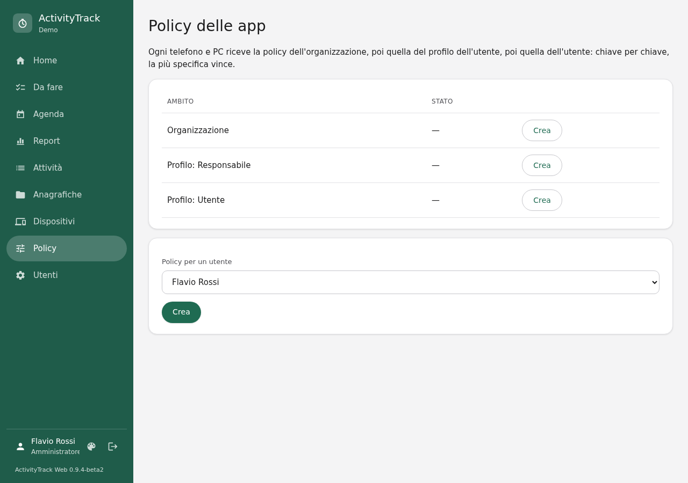
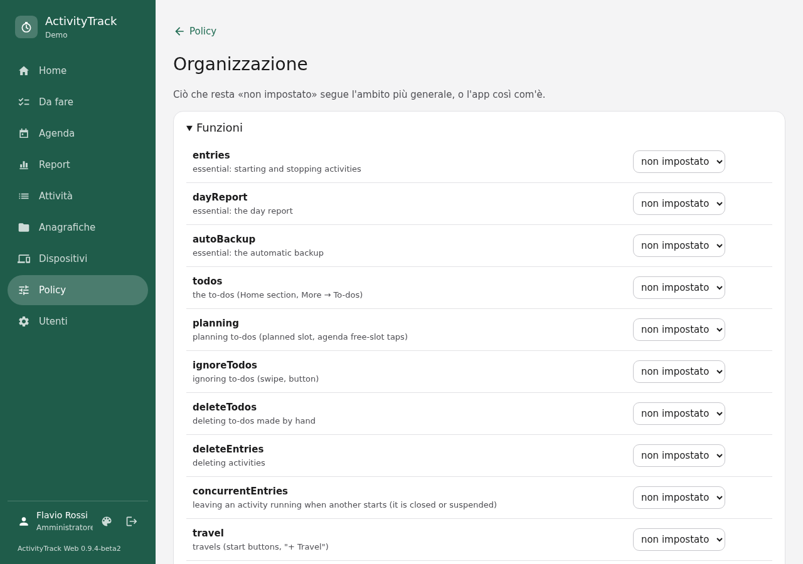
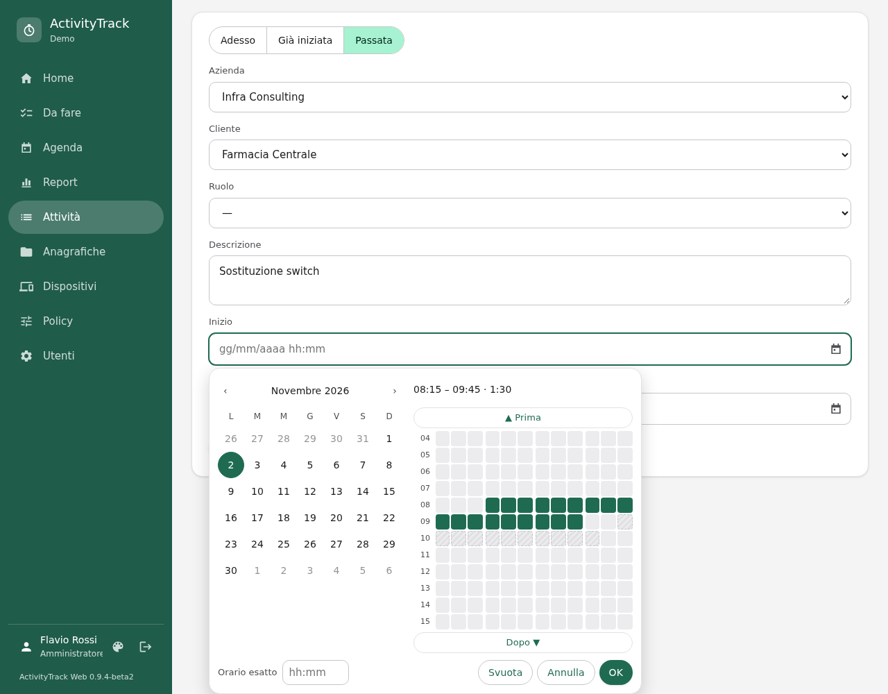
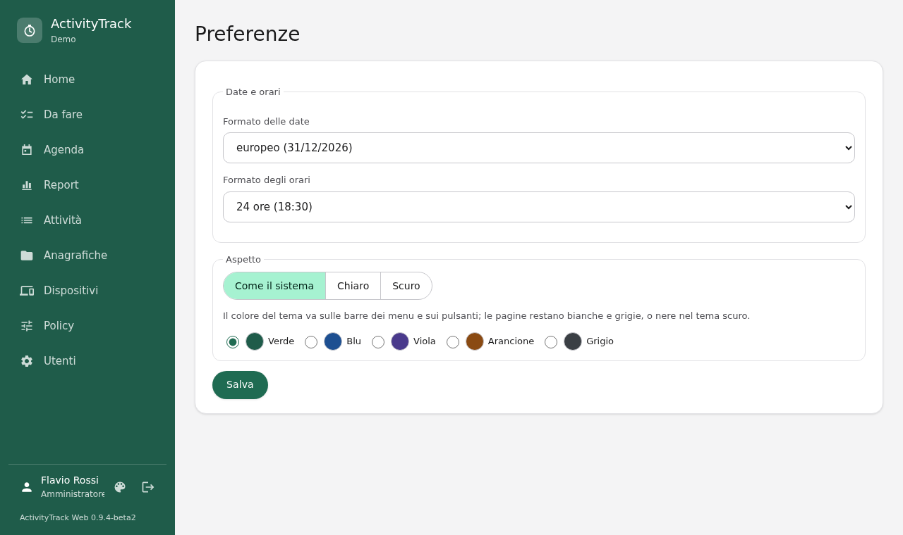

0.9.9
Versione 0.9.9 (novembre 2026). Per chi installa e amministra il server dell'organizzazione; chi usa l'app trova tutto nel Manuale di ActivityTrack.
ActivityTrack Web è il server dell'organizzazione per l'app ActivityTrack:
Un server serve una sola organizzazione. Il telefono funziona anche senza rete: le modifiche aspettano e partono quando la rete torna.
Le istruzioni complete sono in docs/INSTALL.md, nel
repository e nel pacchetto. In breve:
.deb della pagina delle release..tar.gz, o un clone del repository.Il pacchetto prepara l'utente di servizio, le cartelle e il database,
ma non avvia il servizio. Prima si scrive
/etc/activitytrack-web/settings.ini:
| Chiave | Cosa |
|---|---|
[server] base_url |
l'indirizzo HTTPS con cui i telefoni raggiungono il server; finisce
nei codici QR. Con un percorso
(https://www.example.com/activitytrack) l'app vive lì |
[server] allowed_hosts |
i nomi e gli indirizzi con cui si raggiunge il server |
[server] time_zone |
il fuso dei giorni e dei report (predefinito
Europe/Rome) |
[server] tls_pin |
solo con un certificato autofirmato: l'impronta della sua chiave, che l'app fissa |
[database] |
SQLite (predefinito) o PostgreSQL |
[files] max_mb, offload |
dimensione massima degli allegati; chi li invia: Django, nginx o Apache |
[policy] key, cert |
chiave e certificato per firmare le policy e i manifesti degli
aggiornamenti (facoltativi); senza, il server genera una chiave propria
al primo avvio, in signing/ della cartella dei dati:
salvala |
[updates] |
indirizzo del manifesto, canali e intervallo per le nuove versioni (facoltativi, vedi Aggiornamenti) |
[mail] |
server di posta per i codici di accesso via email (facoltativo) |
Poi si crea l'organizzazione con il primo amministratore e si avvia il servizio:
activitytrack-web-manage setup --org "La mia azienda" --admin admin
systemctl enable --now activitytrack-web.socketDavanti serve un web server (nginx o Apache): gli esempi sono in
/usr/share/activitytrack-web/deploy/.
Aggiornare. Con il pacchetto basta installare il
nuovo .deb: il database si aggiorna e il servizio riparte
da solo. Con l'archivio o il clone si sostituisce il codice, poi
activitytrack-web-manage migrate,
activitytrack-web-manage collectstatic --noinput e il
riavvio del servizio.
Comandi di gestione.
activitytrack-web-manage esegue i comandi di Django con
l'utente del servizio, per esempio migrate,
createsuperuser o shell. setup e
le pagine web chiedono una password di almeno 10 caratteri, non comune e
diversa dal nome utente. clean_json_fields ripara, una
volta dopo l'aggiornamento da 0.9.4-beta4 o precedenti, i tag, i numeri
di telefono e i campi dei gestionali salvati da un telefono in una forma
sbagliata (--dry-run li elenca soltanto).

Ognuno accede con il nome utente e la password che gli ha dato l'amministratore. Dopo 10 tentativi sbagliati di fila dallo stesso indirizzo, il login si blocca per qualche minuto.
Verifica in due passaggi. Da "Sicurezza dell'account" (il proprio nome in fondo al menu) ognuno può chiedere, dopo la password, un codice di 6 cifre:
[mail] in
settings.ini).Attivandola si ricevono 10 codici di recupero, da conservare: ognuno vale una volta al posto del codice, se si perde il telefono o la posta. Dopo 5 codici sbagliati si ricomincia dalla password. I telefoni associati non cambiano: sincronizzano con il loro token.
Il menu a sinistra (sul telefono, la barra in basso) contiene Home, Da fare, Agenda, Report, Attività, Anagrafiche e Dispositivi; per gli amministratori anche Policy e Utenti. In fondo c'è il proprio nome: un clic apre "Cambia password".

La pagina Utenti elenca le persone dell'organizzazione. Si cerca per nome, utente o email, e si filtra per profilo e stato. "Nuovo utente" chiede nome utente, nome, profilo e una password (almeno 10 caratteri, non comune, non simile al nome).
| Profilo | Può |
|---|---|
| Amministratore | tutto: utenti, telefoni, policy, anagrafiche centrali, i dati di tutti |
| Responsabile | le anagrafiche centrali; legge le attività del suo team e quelle fatte per le sue aziende, chiunque le abbia fatte; corregge gli orari del suo team; assegna le Da fare al team; i report del team |
| Utente | le sue attività e Da fare, dal telefono e dal web; le sue anagrafiche personali, se la policy lo permette |
| Lettore azienda | solo il report delle attività chiuse delle aziende assegnate; nessun telefono. Pensato per l'amministrazione di un cliente |

Nella scheda di un utente:
Un amministratore non può togliersi il profilo né disattivarsi.
L'altro amministratore, o il comando
activitytrack-web-manage createsuperuser, rimedia se
serve.
In fondo alla pagina Utenti, "Verifica in due passaggi obbligatoria per": nessuno, amministratori, amministratori e responsabili, tutti. Chi è indicato e non l'ha ancora attivata, al primo accesso può solo attivarla. Nella scheda di un utente, "Azzera" la toglie a chi ha perso il telefono: la riattiva al prossimo accesso. Il lucchetto 🔒 nell'elenco indica chi l'ha attiva.
La vecchia amministrazione di Django resta raggiungibile dal fondo della pagina Utenti ("amministrazione avanzata"), per l'organizzazione e i dati grezzi. La usa solo chi ha il profilo Amministratore, e ci si entra dall'accesso normale, con la verifica in due passaggi e il blocco dei tentativi sbagliati; ha il tema e il colore scelti nelle preferenze.

Ogni utente associa i suoi telefoni e PC da Dispositivi → "Associa un dispositivo": compare un codice QR, da inquadrare nell'app con Impostazioni → Sincronizzazione → "Inquadra il codice QR", e sotto il collegamento da incollare in ActivityTrack Desktop sul PC. Il codice vale 10 minuti e una sola volta; la pagina mostra il dispositivo appena è associato. Un PC non manda mai ai gestionali.
Quando sincronizza il telefono.
Non ci sono notifiche push: una modifica fatta sul web arriva al telefono entro 15 minuti, o subito se l'app è aperta. Senza rete aspetta e parte al ritorno della rete.
La mappa degli spostamenti dell'app può usare una mappa offline: una mappa basilare (strade, fiumi, laghi, confini, nomi dei luoghi) tenuta sul telefono, che funziona senza rete. La pagina Mappe (solo amministratori) la prepara:
settings.ini
([maps]); una mappa sopra i 48 MB è rifiutata.build.protomaps.com. La riga mostra in
preparazione, poi pronta (o non riuscita, con il
motivo; la versione precedente resta disponibile).
Aggiorna la prepara di nuovo.I telefoni scaricano le mappe con la sincronizzazione, su Wi-Fi
(entro 15 minuti, subito se l'app è aperta) e tolgono quelle che togli
tu. Un telefono senza server può avere le stesse mappe copiando file
.pmtiles nella cartella maps della sua
cartella dati. Dettagli e comandi (build_maps,
aggiornamento periodico): docs/OFFLINE-MAPS.md.
La pagina Aggiornamenti (solo admin) dice al server dove cercare le nuove versioni di ActivityTrack e di chi fidarsi:
prod, beta, test,
dev), le ore fra un controllo e l'altro (0 = mai da solo).
Controlla ora controlla subito.Aziende, clienti, ruoli, tag, scelte rapide e materiali sono centrali (le vedono tutti; le modificano amministratori e responsabili) o personali (di un utente, se la policy lo consente). L'app e il web mostrano quale è quale. Aziende, clienti e tag hanno un colore facoltativo, scelto tra quelli dell'app, anche dal web.
Se sul telefono e sul server c'è un'anagrafica con lo stesso nome, diventano una sola alla prima sincronizzazione, con i dati del server. Per i tag conta il testo: il nome resta, il colore è quello del server.

Una policy decide cosa possono fare e cambiare le app dei telefoni: funzioni, campi, impostazioni, comportamenti. Ogni telefono riceve, chiave per chiave, la policy dell'organizzazione, poi quella del profilo, poi quella dell'utente: vince la più specifica. Ciò che resta "non impostato" lascia l'app com'è.

Per ogni impostazione:
Le policy arrivano ai telefoni con la sincronizzazione, firmate dal
server: con chiave e certificato di [policy] in
settings.ini se li imposti, altrimenti con una chiave che
il server genera per sé al primo avvio (signing/ nella
cartella dei dati). L'app controlla la firma, e la prima policy
firmata che applica fissa il nome (CN) del firmatario: da
allora rifiuta quelle firmate con un altro nome e quelle non firmate.
Quindi salva signing/ insieme ai dati e non sostituire la
chiave con una di un altro nome. Le app precedenti alla 0.9.9 non
conoscono la chiave generata: continuano a ricevere la policy non
firmata.
Alcune impostazioni valgono anche sul web:
rounding…, carryOverMin): il web calcola
Agenda e Report con le regole della policy di ciascuno. Le impostazioni
personali del telefono non arrivano al server: per avere sul web gli
stessi tempi del telefono, conviene fissarle nella policy.editableTimes)
bloccato su "no": sul web l'utente può solo aggiungere viaggi e pause;
gli orari li corregge un amministratore o il suo responsabile.tagsFreeText) spento: sul
web si scelgono solo i tag dell'anagrafica.Ognuno trova sul web il proprio lavoro, come nell'app.

Date e orari. Nei moduli date e orari si scrivono nel formato scelto nelle preferenze, oppure si scelgono con il pulsante a destra del campo: un calendario che parte dal lunedì e, per gli orari, la griglia a 5 minuti dell'app (una riga per ora, 12 ore alla volta; ▲ Prima / Dopo ▼ spostano la finestra di 3 ore). Inizio e fine si scelgono insieme: trascinando dalla prima casella all'ultima, oppure toccando la prima e poi l'ultima, e OK; in alto l'intervallo e la durata, le caselle tratteggiate sono occupate da altre attività di quel giorno. Orario esatto accetta i minuti fuori griglia (es. 09:37). Nei moduli l'azienda viene prima del cliente e ne filtra l'elenco; scegliendo un cliente, l'azienda diventa la sua.

Preferenze. Dall'icona della tavolozza, accanto al proprio nome (sul telefono: Altro → Preferenze), ognuno sceglie:
Le preferenze sono dell'utente: valgono su ogni browser con cui accede.
La lingua (italiano o inglese) si sceglie nella stessa pagina e vale per il browser in uso; finché non la scegli, le pagine seguono la lingua del browser.

Da fare assegnate. Un responsabile, o un amministratore, crea una voce e sceglie "Assegnata a": la voce diventa della persona scelta e arriva sui suoi telefoni. Riassegnandola, sparisce dai telefoni di chi l'aveva. Chi la riceve vede "Assegnata da …" e la lavora come le sue; il responsabile la segue nella pagina Da fare con Persona → "Tutto il team".


Verifiche dopo la sincronizzazione. Se due telefoni hanno modificato la stessa attività e i tratti si sovrappongono, l'attività diventa "da verificare". Con gli orari bloccati dalla policy la correggono un amministratore o il responsabile, dalla scheda sul web. Una modifica che il server rifiuta (per esempio un'anagrafica centrale bloccata) compare sul telefono come "Non sincronizzati", con il motivo.

Il Report mostra i totali per azienda e cliente in un periodo, con i tempi arrotondati come nell'app e, in piccolo, quelli registrati. Sotto c'è il dettaglio giorno per giorno. Un'attività a cavallo di più giorni conta in ciascuno, salvo lo scavalco notturno.
CSV esporta una riga per attività e giorno, con i minuti registrati e quelli arrotondati. Responsabili e amministratori filtrano per persona; un lettore vede solo le attività chiuse delle sue aziende.
Il documento docs/SECURITY.md descrive cosa protegge il
server e cosa deve fare l'amministratore. In sintesi:
tls_pin; poi HSTS nel web
server;files/ (allegati), insieme alla chiave segreta
(/var/lib/activitytrack-web/secret_key) e alla chiave delle
policy;Per salvare un database SQLite:
sqlite3 /var/lib/activitytrack-web/activitytrack.sqlite3 ".backup '/root/activitytrack-$(date +%F).sqlite3'"Con PostgreSQL si usa pg_dump activitytrack.
| Problema | Cosa fare |
|---|---|
| Il sito risponde 400 "Bad Request" | il nome usato non è in allowed_hosts |
| Il telefono dice "certificato non valido" | certificato autofirmato senza tls_pin, o creato come CA
(docs/INSTALL.md §4) |
| Il QR non viene letto | aumentare la luminosità dello schermo, o copiare nell'app il collegamento sotto "Non riesci a inquadrarlo?" |
| "Codice scaduto" | il codice vale 10 minuti e una volta: generarne un altro |
| Un utente ha perso il telefono con l'app di autenticazione | usa un codice di recupero, o l'amministratore "Azzera" la verifica nella sua scheda |
| Il codice dell'app è sempre "non valido" | l'ora del telefono o del server è sbagliata: va sincronizzata (NTP) |
| Un utente non sincronizza più | è disattivato, o il telefono è stato revocato (Utenti → la sua scheda) |
| Gli allegati non si aprono sul web | con offload = nginx o apache serve la
configurazione del web server dell'esempio |
| Una modifica dal web non arriva subito | arriva entro 15 minuti; aprire l'app la fa arrivare subito |
| Tempi diversi fra telefono e web | arrotondamenti personali del telefono: fissarli nella policy (§7) |
| Dopo un aggiornamento il sito non risponde | systemctl status activitytrack-web.socket activitytrack-web.service,
e il log con journalctl -u activitytrack-web |